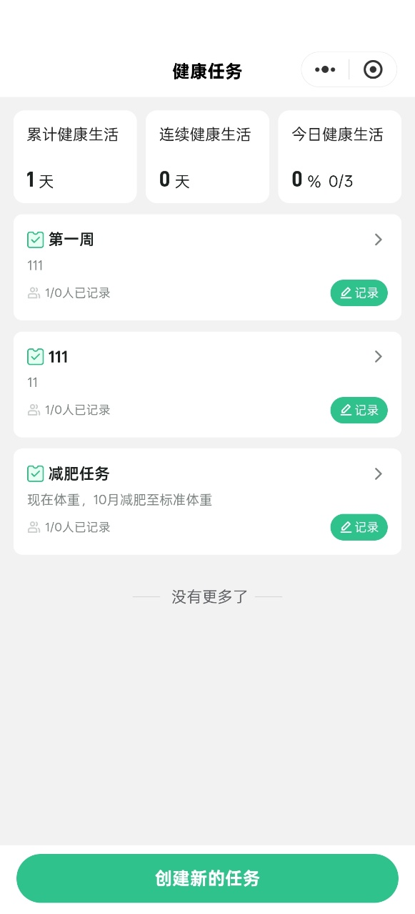

文档版本：V1.0 | 产品负责人：绿韵家产品组 | 状态：需求已确认，待技术评审
| 版本 | 日期 | 修订人 | 修订内容 |
|---|---|---|---|
| V1.0 | 2026-08-18 | 产品组 | 初稿：完成数智对话页、四入口、AI帮你看、健康盒子、Coze工作流、埋点需求梳理 |
| V1.1 | 2026-08-19 | 产品组 | 补充四入口工作流节点级设计：意图识别提示词、商品查询代码节点规格（查哪些字段/怎么排序/取前N名）、知识库召回、回复生成提示词；P9嵌入健康任务参考截图 |
| V1.2 | 2026-08-19 | 产品组 | 根据绿韵家数智原型确认：P1更名为数智首页（一级页）；AI帮你买固定返回Top 3；AI帮你看主入口直接展开子功能；健康任务页为绿韵家已有页面（样式参考泰小虎）；健康档案入口跳转绿韵家已有页面；健康盒子命名统一 |
绿韵家App定位为健康管理与生活服务一体化平台。为提升用户购物与健康决策效率，本期在底部导航新增「数智」Tab，作为AI助手统一入口。数智板块以对话交互为核心，承接「买、看、省、选」四类高频意图，并接入健康检测与家庭健康资产管理能力。
数智模块采用Coze工作流作为AI对话引擎。整体方案参考泰小虎App已跑通的工作流结构（输入层→预处理层→意图识别→条件分发→各业务分支→输出），将角色、知识库、商品接口替换为绿韵家自有资源，UI按绿韵家设计规范重新落地。
| 术语 | 说明 |
|---|---|
| 数智 | 绿韵家App底部Tab级AI助手入口 |
| 四入口 | AI帮你买、AI帮你看、AI帮你省、AI帮你选 |
| 健康盒子 | 家庭健康用品与使用计划的管理中枢，含拍照添加、物品管理、使用计划、记录使用 |
| 健康任务 | 绿韵家已有页面，展示用户健康任务列表与记录入口；本期样式参考泰小虎健康任务页 |
| Coze工作流 | 字节跳动Coze平台的可视化AI工作流，承载意图识别、知识库召回、大模型生成等逻辑 |
| 猜你喜欢 | 绿韵家首页推荐算法，基于统一打分模型对商品排序 |
数智模块以Coze工作流为AI对话引擎，整体业务流程分为输入层、预处理层、意图识别层、条件分发层、业务分支层、输出层六个阶段。各层节点与数据流如下：
基线说明：本图为数智模块横向泳道全链路业务流程图，已梳理并与需求梳理阶段确认的流程图一致。本图引自需求梳理图集（参考泰小虎 txh_app_conversation_center-draft.yaml 与 txh_center_optimize-draft.yaml），阶段/节点与 §4.10 Coze工作流节点设计 一一对应。
| 阶段 | 节点 | 处理内容 | 输出 |
|---|---|---|---|
| 输入层 | 用户输入节点 | 接收文字、语音、图片、入口点击事件 | 原始消息 + 会话ID + user_id |
| 预处理层 | ASR / 图片上传 | 语音转文字、图片上传至绿韵家OSS | 文本消息 或 图片URL |
| 意图识别层 | LLM意图识别 | 判断用户意图：买/看/省/选/兜底 | 意图编码 + 改写后的问题 |
| 条件分发层 | 条件路由 | 按意图编码分发到对应业务分支 | 分支路由信号 |
| 业务分支层 | 买/看/省/选/兜底子工作流 | 调用商品接口、知识库、图像识别、推荐接口 | 结构化回复数据 |
| 输出层 | 回复生成 | 大模型组织话术并拼装卡片 | 文本 + 商品卡片/识别结果 |
数智模块涉及App端、Coze平台、绿韵家中台、泰小虎能力四个部分：
数智模块核心状态流转围绕「AI对话会话」与「健康盒子物品」两类实体展开。
完整状态枚举：空态/欢迎页、对话中、等待用户输入、失败态。
| 起始状态 | 触发动作 | 前置条件 | 目标状态 |
|---|---|---|---|
| 空态/欢迎页 | 用户发送首条消息 | 用户已登录 | 对话中 |
| 对话中 | AI返回结果成功 | 工作流执行成功 | 等待用户输入 |
| 等待用户输入 | 用户发送消息 | — | 对话中 |
| 对话中 | AI返回失败/超时 | 接口异常或超时 | 失败态 |
| 失败态 | 用户点击重试 | — | 对话中 |
完整状态枚举：未录入、已录入、已删除。
| 起始状态 | 触发动作 | 前置条件 | 目标状态 |
|---|---|---|---|
| 未录入 | 用户保存新增物品 | 必填字段完整 | 已录入 |
| 已录入 | 用户编辑保存 | — | 已录入 |
| 已录入 | 用户删除 | — | 已删除 |
| 范围 | 内容 |
|---|---|
| 本期做 | 数智首页（一级页）、四入口对话交互、AI帮你看（舌苔/皮肤/面相/报告解读）、健康盒子（拍照添加/物品管理/使用计划/记录使用）、Coze工作流改造、埋点 |
| 本期不做 | 底部「消息」Tab、AI语音实时通话、多轮复杂问诊、医生人工服务 |
| 角色 | 场景 | 期望结果 |
|---|---|---|
| 绿韵家会员 | 想买蛋白粉，不知道怎么选 | 在数智页输入需求，AI返回产品介绍与商品卡片 |
| 绿韵家会员 | 想了解最近有哪些降价商品 | 点击「AI帮你省」，AI返回折扣最大、价格最低、降价商品 |
| 绿韵家会员 | 买了保健品，想记录服用计划 | 进入健康盒子，拍照识别物品并设置使用计划 |
| 绿韵家会员 | 拍了体检报告，想快速了解异常项 | 点击「报告解读」上传图片，AI给出解读建议 |
本章按「页面」拆解功能需求。每个页面/功能点包含：功能说明、显示位置、权限/登录态、前置条件、逐步操作逻辑、异常分支、校验与提示文案、数据来源。
| 页面编号 | 页面名称 | 路径/入口 | 说明 |
|---|---|---|---|
| P1 | 数智首页（一级页） | 底部Tab「数智」 | AI助手一级页，承载问候、四入口、AI帮你看、健康盒子、对话输入；点击四入口后进入对话态 |
| P2 | AI帮你买对话结果 | P1点击「AI帮你买」或输入商品需求 | 在对话流中返回商品卡片与产品介绍 |
| P3 | AI帮你看对话结果 | P1点击「AI帮你看」或选择子功能 | 在对话流中引导拍照/相册并返回识别结果 |
| P4 | AI帮你省对话结果 | P1点击「AI帮你省」 | 在对话流中返回三类省钱商品卡片 |
| P5 | AI帮你选对话结果 | P1点击「AI帮你选」 | 在对话流中返回猜你喜欢Top3商品介绍 |
| P6 | 健康盒子首页 | P1点击「健康盒子」 | 物品管理与使用计划双Tab首页 |
| P7 | 新增物品页 | P6或拍照添加入口 | AI识别或手动录入健康用品 |
| P8 | 添加使用计划页 | P6使用计划Tab | 为已有物品设置服用/使用计划 |
| P9 | 健康任务页 | P1健康盒子「记录使用」入口 | 绿韵家已有页面，展示健康任务列表与记录入口；本期样式参考泰小虎健康任务页 |
本期新增涉及终端：iOS App、Android App
本期绿韵家数智板块原型参考下图（含数智首页、对话流、健康盒子相关页面）。当前参考泰小虎健康盒子（原百宝箱）/对话页交互逻辑，UI按绿韵家规范重新设计。
⚠️ 待设计 @设计：原型中未定稿细节（如卡片数量、具体文案、空态图）以本PRD文字规格为准。
数智首页（一级页）是AI助手的主页面。用户点击底部Tab「数智」后进入该页面，看到AI助手形象与问候语、四入口、AI帮你看子功能区、健康盒子入口。点击任一入口后，页面切换为对话态，在对话流中展示用户消息与AI回复；用户也可通过底部输入栏手动输入文字、语音或图片。
页面从上至下依次为：
| 步骤 | 用户操作 | 系统响应 |
|---|---|---|
| 1 | 点击底部Tab「数智」 | 加载数智首页（一级页），展示AI形象、问候语、四入口、AI帮你看、健康盒子入口 |
| 2 | 点击任一入口 | 在对话流中自动发送对应预设问题（见4.3-4.6），并进入对应AI工作流分支 |
| 3 | 在底部输入框输入文字并发送 | 文字进入意图识别节点，按识别结果分发到买/看/省/选/兜底分支 |
| 4 | 点击语音按钮并按住说话 | 调起ASR，松手后把识别文字写入输入框，由用户确认后点击发送 |
| 5 | 点击相机按钮 | 调起相机/相册，选择图片后作为图片消息发送给AI；工作流自动识别图片类型并进入对应分支 |
| 异常场景 | 系统行为 | 提示文案 |
|---|---|---|
| 未登录 | 跳转登录页 | — |
| 网络断开 | 展示缺省页或Toast | 网络异常，请检查网络后重试 |
| AI接口超时 | 展示重试按钮 | AI助手响应超时，点击重试 |
| ASR识别失败 | 停留在输入框，保留未识别状态 | 语音识别失败，请重试或手动输入 |
| 元素 | 数据来源 |
|---|---|
| AI问候语 | 前端静态配置，支持按时间/用户画像变化（本期固定一句） |
| 四入口文案与图标 | 前端静态配置 |
| AI帮你看子功能 | 前端静态配置 |
| 健康盒子入口 | 前端静态配置 |
| 健康档案入口 | 跳转绿韵家已有健康档案页，链接由配置中心下发 |
本期新增涉及终端：iOS App、Android App
⚠️ 待设计 @设计：本期需输出绿韵家风格UI稿后替换此处原型图。当前参考泰小虎健康盒子（原百宝箱）/对话页交互逻辑，UI按绿韵家规范重新设计。
用户通过文字/语音描述想买的产品，AI从绿韵家商品库中匹配并返回商品卡片与产品介绍。匹配度低时给出兜底回复。
入口位于P1四入口区第一项。点击后在P1对话流中自动发送预设问题：「我想买，帮我推荐一下」。
需登录。
| 步骤 | 用户操作 | 系统响应 |
|---|---|---|
| 1 | 点击「AI帮你买」入口 | 在对话流中自动发送预设消息「我想买，帮我推荐一下」 |
| 2 | 输入商品名称/需求描述并发送 | 消息进入Coze工作流，意图识别为「买」 |
| 3 | — | Coze调用绿韵家商品搜索接口，按关键词/语义召回商品 |
| 4 | — | 大模型基于Top 3商品信息生成产品介绍，并拼装商品卡片 |
| 5 | — | 在对话流中展示AI回复：产品介绍 + 3个商品卡片（商品图、名称、价格、查看按钮） |
| 6 | 点击商品卡片「查看」 | 跳转绿韵家商品详情H5页（参数待接口对接时确认） |
| 异常场景 | 系统行为 | 提示文案 |
|---|---|---|
| 商品接口无匹配 | 返回兜底话术，不展示商品卡片 | 不好意思，没有找到符合你说明的产品，可以换个说法再问我 |
| 商品接口异常 | 返回友好提示 | 商品服务暂不可用，请稍后再试 |
| 用户输入非商品信息 | 走兜底分支或提示重新描述 | 你可以描述想买的商品名称、功效或适用人群，我来帮你找 |
| 字段/接口 | 说明 |
|---|---|
| 商品搜索接口 | 绿韵家自有商品搜索接口，支持关键词/语义召回 |
| 商品卡片字段 | 商品ID、商品名称、商品主图、划线价、售卖价、查看链接 |
| 兜底话术 | 由Coze提示词控制 |
| 跳转方式 | 点击商品卡片跳转绿韵家商品详情H5页，跳转参数待与后端接口对接确认 |
本期新增涉及终端：iOS App、Android App
⚠️ 待设计 @设计：本期需输出绿韵家风格UI稿后替换此处原型图。当前参考泰小虎健康盒子（原百宝箱）/对话页交互逻辑，UI按绿韵家规范重新设计。
复用泰小虎健康检测类Coze子工作流，支持看舌苔、看皮肤、看面相、体检报告解读四类图片识别能力。用户拍照或从相册选择图片后，AI返回识别结果与健康建议。
入口位于P1四入口区第二项，同时P1中部展示四个子功能快捷图标。点击「AI帮你看」主入口后，直接定位/展开子功能区；点击任一子功能图标后，在对话流中发送对应预设消息并提示用户上传图片。
需登录。识别图片需相机/相册权限。
| 步骤 | 用户操作 | 系统响应 |
|---|---|---|
| 1-A | 点击「AI帮你看」主入口 | 页面直接定位/展开子功能区（看舌苔/看皮肤/看面相/报告解读），等待用户选择具体子功能 |
| 1-B | 点击子功能图标（如「看舌苔」） | 在对话流中发送对应预设消息（如「帮我看看舌苔」） |
| 2 | 按AI提示拍摄或选择图片 | 图片上传至Coze图片识别子工作流，子工作流自动判断图片类型（舌苔/皮肤/面相/报告/其他） |
| 3 | — | 命中 1111/2222/3333 时进入对应图像识别模型；命中 4444 时先 OCR 提取文字，再进入报告解读或兜底处理 |
| 4 | — | 大模型基于识别结果生成健康建议 |
| 5 | — | 在对话流中展示识别结论与建议 |
| 异常场景 | 系统行为 | 提示文案 |
|---|---|---|
| 图片模糊/无法识别 | 提示重新拍摄 | 图片识别失败，请重新拍摄清晰照片 |
| 用户取消拍摄 | 回到对话页，不做处理 | — |
| 识别接口超时 | 展示重试按钮 | 识别超时，请重试 |
| 字段/接口 | 说明 |
|---|---|
| 图像识别模型 | 泰小虎已有模型/服务，以Coze子工作流形式被绿韵家主工作流调用 |
| 报告解读模型 | 泰小虎已有模型/服务，以Coze子工作流形式被绿韵家主工作流调用 |
| 图片上传接口 | 绿韵家通用图片上传接口 |
| 图片类型判断 | 由图片识别子工作流中 LLM 节点输出意图编号：1111=舌头、2222=皮肤、3333=面部、4444=其他/OCR |
本期新增涉及终端：iOS App、Android App
⚠️ 待设计 @设计：本期需输出绿韵家风格UI稿后替换此处原型图。当前参考泰小虎健康盒子（原百宝箱）/对话页交互逻辑，UI按绿韵家规范重新设计。
用户点击后，AI通过后端聚合接口返回三类省钱商品：全站折扣金额最大、全站价格最低、用户最近7天买/浏览/加购且降价的商品。
入口位于P1四入口区第三项。点击后自动发送预设问题：「帮我看看今天有什么划算的商品」。
需登录（依赖用户行为数据）。
| 步骤 | 用户操作 | 系统响应 |
|---|---|---|
| 1 | 点击「AI帮你省」入口 | 自动发送预设问题，进入省钱工作流分支 |
| 2 | — | Coze调用后端聚合接口 /ai/save-money |
| 3 | — | 接口返回三类商品：discount_max（折扣最大）、price_min（价格最低）、price_drop（近7天降价商品） |
| 4 | — | 大模型生成省钱话术，拼装商品卡片列表 |
| 5 | — | 在对话流中展示：省钱总结 + 商品卡片（分类展示） |
| 6 | 点击商品卡片 | 跳转商品详情H5页 |
| 异常场景 | 系统行为 | 提示文案 |
|---|---|---|
| 聚合接口无数据 | 返回友好提示 | 今天暂时没有特别划算的商品，过会儿再来看看吧 |
| 用户无近7天行为数据 | 仅返回全站折扣最大与价格最低两类 | 根据全站好价，为你推荐以下商品 |
| 接口异常 | 展示重试 | 省钱服务暂不可用，请稍后再试 |
| 字段/接口 | 说明 |
|---|---|
| /ai/save-money | 后端聚合接口，返回三类商品数据 |
| 折扣金额计算 | 划线价 - 售卖价 |
| 降价商品判定 | 用户近7天有买/浏览/加购记录，且当前售卖价低于历史价 |
| 商品卡片字段 | 同4.3.7 |
本期新增涉及终端：iOS App、Android App
⚠️ 待设计 @设计：本期需输出绿韵家风格UI稿后替换此处原型图。当前参考泰小虎健康盒子（原百宝箱）/对话页交互逻辑，UI按绿韵家规范重新设计。
用户点击后，AI直接调用绿韵家首页「猜你喜欢」统一打分模型，取得分Top3商品，并由AI介绍商品信息。本期不支持用户输入偏好，直接返回结果。
入口位于P1四入口区第四项。点击后自动发送预设问题：「帮我选几款适合我的商品」。
需登录。
| 步骤 | 用户操作 | 系统响应 |
|---|---|---|
| 1 | 点击「AI帮你选」入口 | 自动发送预设问题，进入「选」工作流分支 |
| 2 | — | Coze调用绿韵家猜你喜欢接口，取Top3商品 |
| 3 | — | 大模型基于Top3商品信息生成推荐理由 |
| 4 | — | 在对话流中展示：推荐理由 + 3个商品卡片 |
| 5 | 点击商品卡片 | 跳转商品详情H5页 |
| 异常场景 | 系统行为 | 提示文案 |
|---|---|---|
| 推荐接口无数据 | 返回热门商品兜底 | 为你推荐站内热门商品 |
| 接口异常 | 展示重试 | 推荐服务暂不可用，请稍后再试 |
| 字段/接口 | 说明 |
|---|---|
| 猜你喜欢接口 | 复用绿韵家首页推荐接口，返回Top3 |
| 商品卡片字段 | 同4.3.7 |
本期新增涉及终端：iOS App、Android App
⚠️ 待设计 @设计：本期需输出绿韵家风格UI稿后替换此处原型图。当前参考泰小虎健康盒子（原百宝箱）/对话页交互逻辑，UI按绿韵家规范重新设计。
健康盒子是家庭健康用品与使用计划的管理中枢。首页采用双Tab结构：物品管理、使用计划。
入口位于P1「健康盒子」区域。点击后进入P6。
需登录。
| 步骤 | 用户操作 | 系统响应 |
|---|---|---|
| 1 | 点击P1「健康盒子」入口 | 进入P6 |
| 2 | 首次进入（用户维度） | 展示引导弹窗：卖点说明 + 流程步骤 + 「稍后说」「拍照识别物品」按钮 |
| 3 | 点击「稍后说」 | 关闭弹窗，默认展示「物品管理」Tab |
| 4 | 点击「拍照识别物品」 | 关闭弹窗并进入P7新增物品流程，直接调起相机 |
| 5 | 切换Tab | 在「物品管理」与「使用计划」之间切换 |
| 异常场景 | 系统行为 | 提示文案 |
|---|---|---|
| 无物品/无计划 | 展示空态 | 你的健康盒子暂无物品 / 暂无使用计划 |
| 相机权限拒绝 | 提示去设置开启 | 请在设置中开启相机权限，以便识别物品 |
| 字段/接口 | 说明 |
|---|---|
| 物品列表接口 | 获取用户健康用品列表 |
| 使用计划列表接口 | 获取用户使用计划列表 |
| 引导弹窗去重 | 按用户ID记录「已展示健康盒子引导」，换设备登录后仍不再展示 |
本期新增涉及终端：iOS App、Android App
⚠️ 待设计 @设计：本期需输出绿韵家风格UI稿后替换此处原型图。当前参考泰小虎健康盒子（原百宝箱）/对话页交互逻辑，UI按绿韵家规范重新设计。
用户可通过AI拍照识别或手动录入方式添加健康用品。拍照识别支持拍摄包装六面自动提取物品信息。
入口：P6「物品管理」Tab → 新增物品；或P1健康盒子「拍照添加」入口。
需登录。
| 步骤 | 用户操作 | 系统响应 |
|---|---|---|
| 1 | 点击「新增物品」或「拍照添加」 | 进入P7，顶部展示「AI智能识别」入口 |
| 2-A | 点击「AI智能识别」并拍摄包装 | 上传图片至AI识别服务，自动填充物品名称、规格、有效期等字段 |
| 2-B | 手动填写表单 | 用户自行填写物品图片、名称、规格、数量、有效期、备注 |
| 3 | 点击保存 | 校验必填项，调用保存接口，成功后返回P6并刷新列表 |
| 异常场景 | 系统行为 | 提示文案 |
|---|---|---|
| 识别失败 | 保留图片，字段为空等待手动填写 | 识别失败，请手动填写物品信息 |
| 必填项未填 | 聚焦到未填项并提示 | 请填写物品名称 |
| 保存失败 | 展示重试 | 保存失败，请重试 |
| 字段 | 必填 | 类型 | 长度/格式 | 备注 |
|---|---|---|---|---|
| 物品图片 | 否 | 图片 | ≤5MB，JPG/PNG | AI识别时自动填充 |
| 物品名称 | 是 | 文本 | ≤50字 | — |
| 物品规格 | 否 | 文本 | ≤50字 | 如60粒/瓶 |
| 物品数量 | 否 | 数字 | 正整数 | — |
| 有效期至 | 否 | 日期 | yyyy-MM-dd | — |
| 备注 | 否 | 文本 | ≤200字 | — |
本期新增涉及终端：iOS App、Android App
⚠️ 待设计 @设计：本期需输出绿韵家风格UI稿后替换此处原型图。当前参考泰小虎健康盒子（原百宝箱）/对话页交互逻辑，UI按绿韵家规范重新设计。
为已有物品设置服用/使用计划，系统按频率提醒用户。
入口：P6「使用计划」Tab → 新增计划。
需登录。
| 步骤 | 用户操作 | 系统响应 |
|---|---|---|
| 1 | 点击「新增计划」 | 弹出添加使用计划表单 |
| 2 | 选择物品名称 | 从已有物品列表中选择 |
| 3 | 选择频率、提醒时间、使用数量、使用周期、备注 | 表单实时校验 |
| 4 | 点击保存 | 调用保存接口，成功后刷新使用计划列表 |
| 异常场景 | 系统行为 | 提示文案 |
|---|---|---|
| 无可用物品 | 提示先去添加物品 | 请先添加物品，再创建使用计划 |
| 保存失败 | 展示重试 | 保存失败，请重试 |
| 字段 | 必填 | 类型 | 长度/格式 | 备注 |
|---|---|---|---|---|
| 物品名称 | 是 | 选择 | 从已有物品选 | — |
| 频率 | 是 | 枚举 | 每天/每周/自定义 | — |
| 提醒时间 | 是 | 时间 | HH:mm | — |
| 使用数量 | 否 | 文本/数字 | ≤20字 | 如每次1粒 |
| 使用周期 | 否 | 日期范围 | yyyy-MM-dd 起止 | — |
| 备注 | 否 | 文本 | ≤200字 | — |
本期新增入口涉及终端：iOS App、Android App
⚠️ 待设计 @设计：绿韵家已有健康任务页，本期样式参考泰小虎「健康任务」截图（下图）。顶部展示累计健康生活、连续健康生活、今日健康生活三类统计卡片；下方为任务列表，每个任务展示任务名称、描述、已记录人数及「记录」按钮；底部固定「创建新的任务」按钮。

健康任务页为绿韵家已有页面，用于展示用户当前健康任务列表，并支持记录任务完成情况与创建新任务。本期数智模块通过健康盒子「记录使用」入口跳转到该页面，页面样式参考泰小虎健康任务页。
入口：P1健康盒子「记录使用」入口。点击后跳转健康任务页。
需登录。
| 步骤 | 用户操作 | 系统响应 |
|---|---|---|
| 1 | 点击「记录使用」 | 跳转健康任务页 |
| 2 | 浏览任务列表 | 展示任务名称、描述、已记录人数 |
| 3 | 点击任务右侧「记录」 | 进入该任务记录详情页或弹出记录表单 |
| 4 | 点击底部「创建新的任务」 | 进入新建任务流程 |
| 异常场景 | 系统行为 | 提示文案 |
|---|---|---|
| 无任务 | 展示空态并引导创建 | 暂无健康任务，点击创建新的任务 |
| 接口异常 | 展示重试 | 任务加载失败，请重试 |
| 字段/接口 | 说明 |
|---|---|
| 健康任务列表接口 | 获取用户健康任务列表、统计卡片数据 |
| 任务记录接口 | 提交任务完成记录 |
| 创建任务接口 | 新建健康任务 |
本期新增涉及终端：iOS App、Android App
⚠️ 待设计 @设计：本期需输出绿韵家风格UI稿后替换此处原型图。当前参考泰小虎健康盒子（原百宝箱）/对话页交互逻辑，UI按绿韵家规范重新设计。
数智模块复用泰小虎工作流结构，节点改造点如下：
txh_center_optimize-draft.yaml），输出图片类型与OCR文本，供主工作流意图识别使用。参考泰小虎 txh_center_optimize-draft.yaml，绿韵家图片识别子工作流设计如下：
| 节点 | 类型 | 职责 | 输出 |
|---|---|---|---|
| 开始 | start | 接收 userImages、userInput | 图片列表 + 用户输入 |
| 提取用户输入的文案和图片信息 | code | 从 userInput 中提取 Markdown 图片与普通URL，清理文本残留逗号/空格 | parseText（清洗后文本）、parseImageUrls（图片URL列表） |
| 判断是否有图片 | condition | 判断 parseImageUrls 是否为空 | true/false 分支 |
| 意图识别舌或者其他 | llm | 结合用户文本与图片内容，判断图片类型并改写查询 | imageParseOutput：1111=舌头、2222=皮肤、3333=面部、4444=其他 |
| 判断是否是舌头 | condition | 根据 imageParseOutput 分流 | true（1111/2222/3333）/ false（4444） |
| 循环（OCR） | loop | 对 4444 类图片调用 Image2text 插件逐张OCR | 每张图片的识别文字 |
| 清洗OCR内容 | code | 抽取 "text":"..." 内容，过滤垃圾关键词与长数字串 | pureText（清洗后纯文本） |
| 信息整合 | llm | 合并用户文本与图片OCR结果，输出结构化JSON（含图片类型、关键词、候选商品、报告指标等） | 结构化识别结果 |
| 统一输出内容 | code | 按优先级整合 pureText、imageParseOutput、userInput，输出最终结果 | result + userInput |
| 结束 | end | 返回 result、imageParseOutput、userInput | 子工作流出参 |
| 知识库/数据源 | 用途 | 来源 |
|---|---|---|
| 绿韵家产品知识库 | AI帮你买、AI帮你选的商品介绍与FAQ | 新建，导入绿韵家商品资料 |
| 绿韵家企业/品牌知识库 | 兜底问答、品牌介绍 | 新建，导入绿韵家官方资料 |
| 绿韵家商品接口 | 商品搜索、详情、价格 | 绿韵家后端 |
| 绿韵家用户行为数据 | AI帮你省降价商品、猜你喜欢Top3 | 绿韵家后端 |
| 泰小虎图像识别服务 | 看舌苔/看皮肤/看面相/报告解读 | 以Coze子工作流形式复用 |
四入口点击后均自动发送预设消息并进入对应 Coze 工作流分支。买 / 省 / 选三条分支的共性链路为：
意图识别节点（LLM） → 商品查询代码节点（code，调用产品信息，排序取前 N 名） → 知识库召回节点（knowledge，按前 N 名商品检索知识） → 回复生成节点（LLM，结合商品数据 + 知识生成回复）
「调用产品信息」一律以 Coze 代码节点实现，提示词只消费代码节点输出的结构化结果，不直接拼接口 / SQL。以下给出各分支的节点序列、代码节点规格与提示词。
# 角色
你是绿韵家数智模块的意图识别器。
# 输入
- 用户输入（文字或 ASR 改写后）：{{user_input}}
- 图片识别结果（若有）：{{image_type}}（1111舌 / 2222皮肤 / 3333面相 / 4444报告或OCR）
# 任务
判断意图，仅输出以下编码之一，并输出一句改写后的问题：
1001 买：用户想找 / 购买某商品
1002 看：用户想做健康检测（舌 / 皮肤 / 面相 / 报告）
1003 省：用户想找划算 / 优惠商品
1004 选：用户想被推荐商品
9999 兜底：其他健康 / 生活问答
# 输出格式（严格 JSON，不要任何额外解释）
{"intent":"1001","rewritten_query":"用户想买什么"}
节点序列
| 项 | 规格 |
|---|---|
| 节点类型 | code（Python / JS），在 Coze 中以代码节点实现 |
| 调用接口 | GET /api/goods/search（绿韵家商品搜索接口） |
| 入参 | keyword = {{rewritten_query}}；pageSize=20；可选 categoryId |
| 查询返回字段（每个商品对象） | goodsId 商品ID、goodsName 商品名称、mainImage 主图、linePrice 划线价、salePrice 售卖价、categoryId 分类、brandName 品牌、sales 销量、favorableRate 好评率(0-1)、effectTags 功效标签[]、suitableCrowd 适用人群[]、avgPriceInCategory 同类均价 |
| 排序逻辑（节点内计算综合得分） | relevanceScore 取搜索接口向量召回相关度(0-1)；salesNorm = sales / maxSales；priceCompete = (avgPriceInCategory - salePrice) / avgPriceInCategory（截断0-1）；score = 0.5*relevanceScore + 0.2*salesNorm + 0.15*favorableRate + 0.15*priceCompete |
| 取前 N 名 | 按 score 降序，取 Top 3 |
| 输出变量 | top_products：结构化数组（最多5项，含上述字段） |
| 项 | 规格 |
|---|---|
| 节点类型 | knowledge（知识库检索） |
| 检索输入 | top_products 中每个商品的 goodsName + goodsId + effectTags（最多 3 个） |
| 知识库 | 绿韵家产品知识库 |
| 召回内容 | 各商品的产品介绍、核心功效、FAQ、适用人群、注意事项 |
| 输出变量 | kb_context：拼接的产品知识文本 |
# 角色
你是绿韵家 AI 健康生活助手，服务于「数智」板块。
# 任务
结合候选商品与产品知识，用口语化、有温度的话术为用户介绍商品并给购买建议。
# 输入
- 用户问题：{{user_query}}
- 候选商品（已按相关度排序，固定3个）：{{top_products}}
- 产品知识片段：{{kb_context}}
# 输出要求
1. 先一句共情 / 回应（如「帮你挑了几款合适的」），再逐款介绍；
2. 每款含：名称、一句话卖点、核心功效、适用人群、当前价格（有划线价则标注优惠）；
3. 仅基于候选商品与产品知识作答，禁止编造不存在的功效 / 价格 / 资质；知识不足时说明「以商品详情页为准」；
4. 涉及健康 / 服用建议，结尾加「以上建议仅供参考，具体请遵医嘱或商品说明」；
5. 输出结构化文本，供 App 端渲染卡片，卡片字段：goodsId、goodsName、mainImage、salePrice。
节点序列
| 项 | 规格 |
|---|---|
| 节点类型 | code（Python / JS） |
| 调用接口 | POST /ai/save-money（后端聚合接口） |
| 入参 | userId；days=7（近7天降价窗口） |
| 查询字段 / 计算口径 | discount_max：按 (linePrice - salePrice) 降序取最大；price_min：按 salePrice 升序取最小；price_drop：近7天有 买 / 浏览 / 加购 行为且 salePrice < 历史价 的商品 |
| 取前 N 名 | 每类取 Top 1，共 3 个商品 |
| 输出变量 | save_products：含 discount_max / price_min / price_drop 三类结构化商品 |
# 角色
你是绿韵家 AI 健康生活助手。
# 任务
基于下方「省钱商品」为用户总结今日划算清单。
# 输入
- 用户问题：{{user_query}}
- 省钱商品（三类）：折扣最大 {{discount_max}}、价格最低 {{price_min}}、近7天降价 {{price_drop}}
# 输出要求
1. 用一句总结开头（如「今天有这几款特别划算」）；
2. 按「折扣最大 → 价格最低 → 降价商品」三段展示，每段点明省钱点（省了多少 / 降了多少）；
3. 价格与优惠以接口数据为准，不臆造；
4. 结尾提示「价格随活动变动，以商品详情页为准」；
5. 输出结构化文本，供 App 端分段渲染商品卡片。
节点序列
| 项 | 规格 |
|---|---|
| 节点类型 | code（Python / JS） |
| 调用接口 | GET /api/recommend/guess-you-like（猜你喜欢，复用首页统一打分模型） |
| 入参 | userId；topN=3 |
| 查询返回字段 | 同 4.11.4.2 商品对象（goodsId / goodsName / mainImage / linePrice / salePrice / effectTags / suitableCrowd 等） |
| 取前 N 名 | 按推荐模型得分降序，取 Top 3 |
| 输出变量 | pick_products：结构化数组（3项） |
# 角色
你是绿韵家 AI 健康生活助手。
# 任务
基于首页「猜你喜欢」Top3 商品，为用户做个性化推荐并说明理由。
# 输入
- 用户问题：{{user_query}}
- 推荐商品（Top3）：{{pick_products}}
- 产品知识片段：{{kb_context}}
# 输出要求
1. 用一句「根据你的偏好，挑了3款」开头；
2. 每款给推荐理由（结合功效 / 适用场景），不要堆砌参数；
3. 仅基于给定商品与知识作答；
4. 结尾引导「点开看看，不合适我再帮你换」；
5. 输出结构化文本，供 App 端渲染卡片。
本需求埋点事件与属性严格遵循《泰小虎埋点规范 v2.3》。在线查阅：泰小虎埋点规范 v2.3。
| 事件英文名 | 事件显示名 | 所属层 | 平台 | 触发时机 | 必含上报参数（友盟中文名） | 备注 |
|---|---|---|---|---|---|---|
| page_view | 页面浏览 | L1 | Android/iOS | 数智首页（一级页）、健康盒子首页等页面加载完成 | 页面名称、页面路径、来源页面、停留时长 | page_name新增「lvyun_ai_chat」「lvyun_health_box」「lvyun_health_task」 |
| tab_switch | Tab切换 | L1 | Android/iOS | 点击底部「数智」Tab切换 | 来源Tab、目标Tab | — |
| button_click | 按钮点击 | L1 | Android/iOS | 点击四入口、AI帮你看子功能、健康盒子入口、底部输入按钮 | 页面名称、按钮名称、按钮类型 | button_name建议枚举：ai_buy/ai_look/ai_save/ai_pick/tongue/skin/face/report/health_box/voice/camera |
| dialogue_send | 发起AI对话 | L2 | Android/iOS | 用户在数智页发送消息 | 对话ID、消息ID、消息类型、是否首条消息、帮助类型、快捷问题ID、触发类型 | help_type枚举：buy/look/save/pick/other |
| scan_entry | 智能识别入口 | L1 | Android/iOS | 点击看舌苔/看皮肤/看面相/报告解读或相机按钮 | 信息ID、入口来源、识别类型 | scan_type：tongue/skin/face/report/photo_msg |
| scan_complete | 完成图片识别 | L2 | Android/iOS | 识别流程终态：成功/失败/超时/取消 | 识别任务ID、识别类型、识别结果、结果数量、识别耗时、错误码、失败阶段 | — |
| recommend_view | 推荐结果曝光 | L2 | Android/iOS | AI买/省/选结果中的商品卡片曝光 | 推荐批次ID、推荐来源、对话ID、推荐产品数、产品ID列表 | recommend_source：dialogue_ai_buy/dialogue_ai_save/dialogue_ai_pick |
| purchase_link_click | 点击查看商品 | L3 | Android/iOS | 点击商品卡片「查看」 | 消息ID、来源、产品ID、产品名称、购买渠道、推荐批次ID、会话ID | source：dialogue_recommend |
| feedback_click | 点击对话反馈 | L2 | Android/iOS | 用户点击AI回复反馈按钮 | 对话ID、消息ID、反馈类型、反馈动作 | — |
| popup_view | 弹窗曝光 | L1 | Android/iOS | 健康盒子首次引导弹窗展示 | 弹窗实例ID、弹窗名称、弹窗类型、触发来源 | popup_name：health_box_guide |
| popup_close | 弹窗关闭 | L1 | Android/iOS | 健康盒子引导弹窗关闭 | 弹窗实例ID、弹窗名称、关闭方式、停留时长、用户选择 | — |
以下字段已纳入本期埋点设计，需与数据/研发同步落表：
| 指标 | 要求 |
|---|---|
| 数智页首屏加载 | ≤1.5s（正常网络） |
| AI首条回复 | ≤3s（文字输入，正常网络） |
| 图片识别响应 | ≤5s（不含上传时间） |
| 商品卡片加载 | ≤1s |
| 验收项 | 验收标准 | 验收方式 |
|---|---|---|
| 数智Tab入口 | 登录用户点击底部「数智」Tab，正常进入数智首页（一级页）；未登录用户跳转登录页 | 功能测试 |
| 四入口对话触发 | 点击AI帮你买/看/省/选，对话流中自动发送对应预设消息并进入正确分支 | 功能测试 |
| AI帮你买 | 输入商品需求后，返回商品卡片；无匹配时返回兜底话术 | 功能测试 |
| AI帮你省 | 返回折扣最大、价格最低、近7天降价商品三类数据，卡片可点击跳转详情 | 功能测试 |
| AI帮你选 | 返回猜你喜欢Top3商品，并附AI推荐理由 | 功能测试 |
| AI帮你看 | 看舌苔/皮肤/面相/报告解读子流程可正常上传图片并返回识别结果 | 功能测试 |
| 健康盒子 | 首次进入展示引导弹窗（按用户ID去重）；物品管理与使用计划可正常新增、编辑、删除 | 功能测试 |
| 记录使用 | 点击健康盒子「记录使用」入口，正确跳转健康任务页 | 功能测试 |
| 语音输入 | 按住说话松手后，识别文字写入输入框，用户点击发送后进入工作流 | 功能测试 |
| 相机拍照 | 拍照后作为图片消息发送，工作流自动识别图片类型 | 功能测试 |
| 埋点上报 | 本期清单中所有事件按规范触发，参数完整准确 | 埋点测试 |
| 指标 | 标准 | 验收方式 |
|---|---|---|
| 数智页首屏加载 | 正常网络≤1.5s，弱网≤3s | 性能测试 |
| AI首条文字回复 | 正常网络≤3s | 性能测试 |
| 图片识别响应 | 不含上传≤5s | 性能测试 |
| 验收项 | 标准 | 验收方式 |
|---|---|---|
| Android | Android 8.0及以上机型正常展示与交互 | 兼容性测试 |
| iOS | iOS 12及以上机型正常展示与交互 | 兼容性测试 |
| 全面屏适配 | 刘海屏、底部安全区、异形屏无遮挡 | UI走查 |
| 场景 | 边界处理 |
|---|---|
| 未登录点击数智Tab | 跳转登录页，登录成功后返回数智页 |
| 登录态失效 | 在数智页内调用接口时失效，统一走App登录态失效处理（如刷新token或跳转登录） |
| 场景 | 边界处理 |
|---|---|
| 网络断开 | 展示缺省页或Toast：网络异常，请检查网络后重试 |
| 弱网 | 接口超时时间合理设置，展示loading与重试按钮 |
| 上传大图片 | 压缩后上传，单张≤5MB；超限时提示用户 |
| 场景 | 边界处理 |
|---|---|
| 商品接口无数据 | 返回兜底话术，不展示空白卡片 |
| 用户无近7天行为数据（省/选） | 「省」仅返回全站折扣最大与价格最低；「选」返回热门商品兜底 |
| 识别图片模糊 | 提示重新拍摄，不返回无意义结果 |
| 健康盒子无物品 | 展示空态并引导新增 |
| 场景 | 边界处理 |
|---|---|
| 意图识别失败 | 进入兜底分支，友好回复并引导用户描述需求 |
| 大模型生成超时 | 展示重试按钮，不卡死页面 |
| 健康建议输出 | 必须标注「仅供参考，不构成医疗诊断」 |
本PRD进入开发后，任何对功能范围、接口定义、数据口径、埋点字段的变更，须经产品负责人确认并更新修订记录。涉及本期范围外的新增功能，须单独立项评审。
文档版本号采用 Vx.y 格式：x 为重大版本（对应里程碑迭代），y 为修订次数。每次变更须同步更新「一、修订记录」。
| 角色 | 职责 |
|---|---|
| 产品负责人 | 需求确认、范围把控、PRD定稿 |
| 研发负责人 | 技术方案评审、接口设计 |
| 数据/埋点负责人 | 埋点事件与属性确认 |
| 测试负责人 | 验收标准评审、用例设计 |
| 入口 | 预设消息 |
|---|---|
| AI帮你买 | 我想买，帮我推荐一下 |
| AI帮你看（主入口） | 不发送预设问题，直接展开子功能区 |
| AI帮你看-看舌苔 | 帮我看看舌苔 |
| AI帮你看-看皮肤 | 帮我看看皮肤 |
| AI帮你看-看面相 | 帮我看看面相 |
| AI帮你看-报告解读 | 帮我解读这份报告 |
| AI帮你省 | 帮我看看今天有什么划算的商品 |
| AI帮你选 | 帮我选几款适合我的商品 |
| 意图编码 | 含义 | 触发条件 |
|---|---|---|
| 1001 | AI帮你买 | 用户表达购买意向、点击AI帮你买入口 |
| 1002 | AI帮你看 | 用户点击看舌苔/皮肤/面相/报告解读、发送图片请求识别 |
| 1003 | AI帮你省 | 用户表达省钱/划算/降价意向、点击AI帮你省入口 |
| 1004 | AI帮你选 | 用户表达推荐/选择意向、点击AI帮你选入口 |
| 9999 | 兜底问答 | 未命中以上意图 |
| 图片类型编码 | 含义 | 后续处理 |
|---|---|---|
| 1111 | 舌头/舌象 | 进入看舌苔子工作流 |
| 2222 | 皮肤 | 进入看皮肤子工作流 |
| 3333 | 面部/面相 | 进入看面相子工作流 |
| 4444 | 其他/OCR | 先OCR提取文字，再进入报告解读或兜底处理 |
| 序号 | 待确认内容 | 影响范围 | 建议负责人 |
|---|---|---|---|
| 1 | 绿韵家商品详情H5跳转参数（product_id、sku_id、来源等） | 商品卡片点击 | 研发 |
| 2 | 泰小虎图像识别子工作流与绿韵家主工作流的接入授权及调用方式（是否需要跨空间/跨账号） | AI帮你看实现 | 研发/商务 |
| 3 | 健康任务页是否复用泰小虎现有页面，还是绿韵家自建；若复用，接口字段如何映射 | 记录使用入口 | 产品/研发 |
| 风险 | 等级 | 应对措施 |
|---|---|---|
| 泰小虎工作流与绿韵家接口字段不一致，导致复用成本高于预期 | 中 | 前期做字段映射表，优先改造买/省/选分支，看分支复用子工作流 |
| 绿韵家商品数据不足，AI买/选推荐效果差 | 中 | 上线前补充产品知识库，设置兜底话术与热门商品兜底 |
| 健康盒子与绿韵家已有健康任务/计划模块重复 | 低 | 明确健康盒子定位：家庭健康用品资产管理；与已有模块做入口互通 |